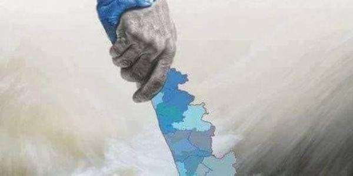
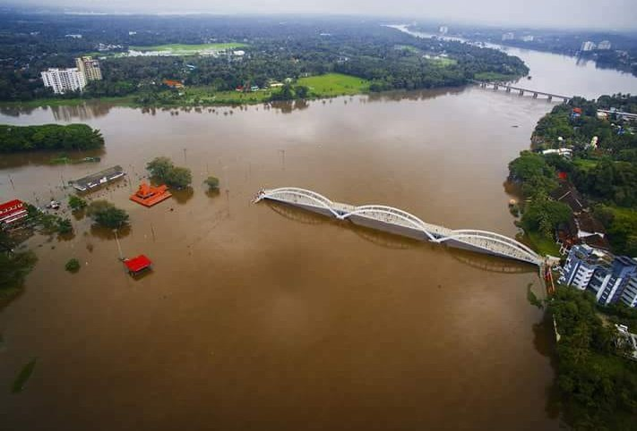
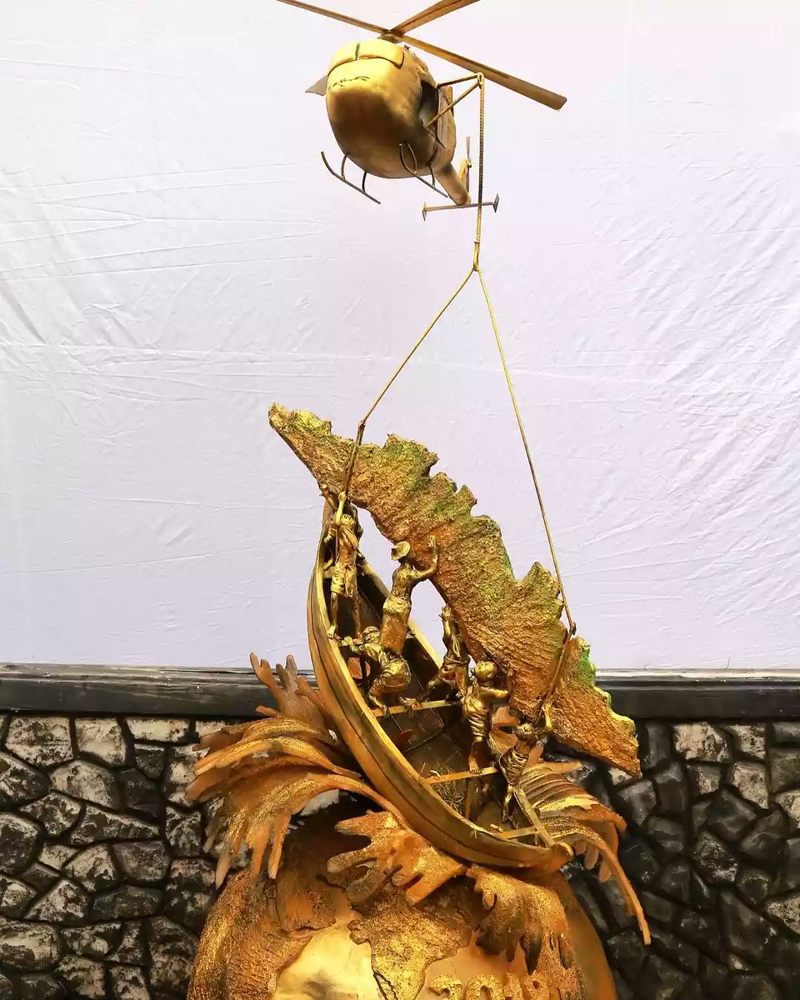
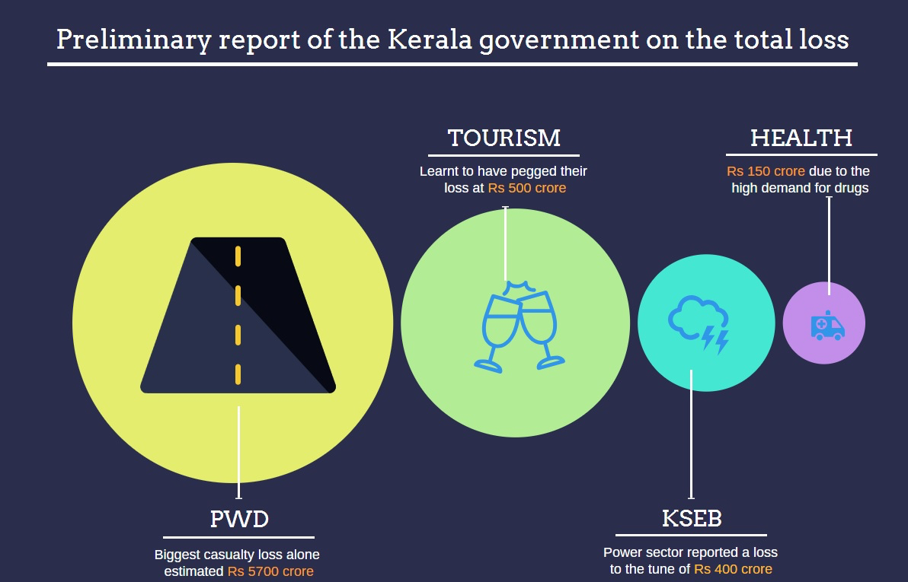

KERALA FLOOD 2018
The Indian state of Kerala has faced it's most devastating flood of a century in the year 2018
It was hard time for the people of God's own country.Since May 2018, unusually high levels of rain took over the state of Kerala. The devastation that ensued resembled that of the 1924 floods, which is popularly called the "Great Flood of 99." As of August 30, the final death toll, declared by Chief Minister Pinarayi Vijayan, stands at 483, and 15 people are missing.
Kerala received heavy monsoon rainfall, which was about 256% more than the usual rain fall in Kerala, on the mid-evening of August 8, resulting in dams filling to capacity; in the first 24 hours of rainfall the state received 310 mm (12 in) of rain. Almost all dams had been opened since the water level had risen close to overflow level due to heavy rainfall, flooding local low-lying areas. For the first time in the state's history, 35 of its 54 dams had been opened. The Government of Kerala argued in the Supreme Court that the sudden release of water from the Mullaperiyar Dam by the Tamil Nadu government was one of the reasons for the devastating flood in Kerala. The Tamil Nadu government rejected the argument, saying that Kerala suffered the deluge due to the discharge of excess water from 80 reservoirs across Kerala, spurred by heavy rains from within the state; It also argued that the flood surplus from the Idukki dam is mainly due to the flows generated from its own independent catchment due to unprecedented heavy rainfall, while the discharge from Mullaperiyar dam was significantly less. Though it is difficult to attribute any single event to climate change, its possible role in causing the heavy rainfall event over Kerala cannot be ruled out.

The Economic Times has reported that 33,000 people have been rescued. The Kerala State Disaster Management Authority has placed the state in a red alert as a result of the intense flooding. A number of water treatment plants were forced to cease pumping water, resulting in poor access to clean water, especially in northern districts of the state. Over 3,274 relief camps have been opened at various locations to accommodate the flood victims. It is estimated that 1,247,496 people have found shelter in such camps. The flooding has affected hundreds of villages, destroyed an estimated 10,000 km (6,200 mi) of roads and thousands of homes have been damaged or destroyed. The Government has cancelled Onam celebrations, whose allocated funds have been reallocated to relief efforts. On August 15, Cochin International Airport, India's fourth busiest in terms of international traffic, and the busiest in the state suspended all operations until 29 August, following runway flooding. Many schools throughout the state have been closed, and tourists have been dissuaded or banned from some districts due to safety concerns. Kochi Metro was closed briefly on August 16, and has since begun offering free service to aid those affected by the flooding. Due to heavy rain and rising water levels the southern railway has suspended train services on Thiruvananthapuram-Kottayam-Ernakulam and Ernakulam-Shoranur-Palakkad sections.
The jury is still out on the reasons for the devastating floods in Kerala, billed as the worst in more than a century. A proper flood warning system and better management of water levels in reservoirs might have lessened its impact significantly. There might have been several slips, and there may still be issues in relief camps and in rehabilitating people. But what is undeniable is that Kerala pulled off a near-impossible rescue operation across the state, with everybody from top bureaucrats and armed forces to local communities and mobile-wielding youngsters chipping in.
The Real heros
It was an operation where everybody was a hero, be it an army man or a policeman saving many lives, or just a common man who gave shelter to others and shared whatever food and drinking water they had. But one group that everybody now hails as the new heroes of Kerala is the fishermen who rushed in and threw themselves into the swirling waters to save people who they had never met.
A video clip of Jaisal KP, a fisherman from Malappuram, going on all fours in knee-deep flood waters to let women step on his back to get into a rescue boat is one unforgettable image that has gone viral on social media all over the world.
As many as 952 fishing boats and more than 4,500 fishermen from coastal areas of Kerala rescued at least 65,000 people, mainly in Pathanamthitta, Alappuzha, Thrissur and Ernakulam districts, between August 15 and August 19.
"Once they landed there, fishermen took the responsibility and started saving people stuck at homes on their own. They did not wait for any instruction from anybody," Kollam collector Karthikeyan said.
Rebuilding a New Kerala
The Kerala government is preparing to rehabilitate victims of the worst floods it has faced in nearly a century. Over 350 people have died during this monsoon, and 1.2 million are in camps.
Chief Minister Pinarayi Vijayan has told his cabinet that Kerala will need mega-funds to rebuild areas hit by floods, and rehabilitate victims.He told reporters that Kerala would raise Rs 10,000 crore as an additional loan, and request the Centre to increase the loan limit.
A report from the Associated Chambers of Commerce and Industry of India, or Assocham, says the floods could potentially have caused damage worth Rs 15,000 to Rs 20,000 crore.
The state government has hiked the excise duty on liquor by 0.5 percent to 3.5 percent for 100 days, aiming to collect Rs 230 crore additional revenue. It also announced a special lottery "Ashwas" priced at Rs 250 per ticket to raise Rs 100 crore.
About Me

Hello, I'm Vishnu. I am an ECE student in MESCE, Kuttipuram. Currently I am also working as an intern in Eallisto pvt. ltd.
 Phone: +918592893018
Phone: +918592893018
email: vishnu.suku.nair@gmail.com